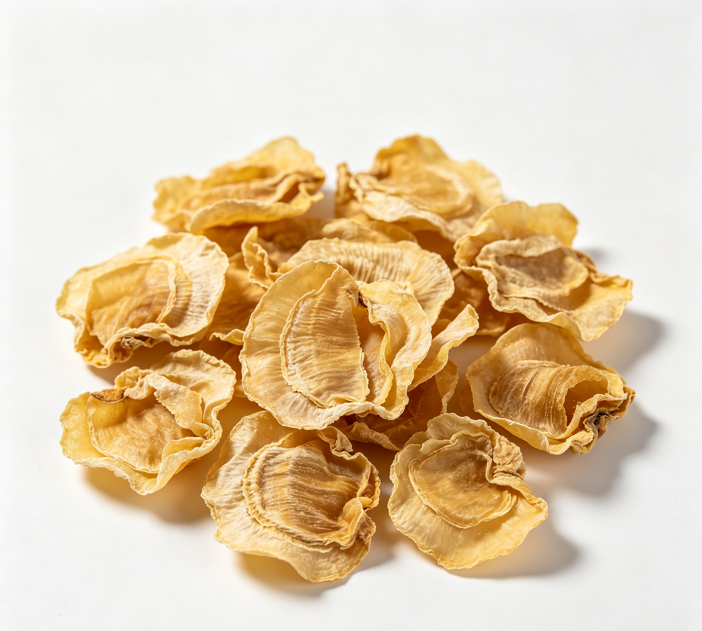

📋 基本信息
中文名鸡内金
拉丁名Gallus gallus domesticus Brisson
英文名The Membrane Of A Chicken'S Gizzard
产地科：雉科（Phasianidae）；属：原鸡属（Gallus）；来源动物拉丁学名：Gallus gallus domesticus Brisson。全国各地均产，随家禽养殖地区广泛收集。
性状本品为不规则卷片，厚约2mm。表面黄色、黄绿色或黄褐色，薄而半透明，具明显的条状皱纹。质脆，易碎，断面角质样，有光泽。气微腥，味微苦。【来源：《中国药典》2020年版一部】
用法用量3～10g。【来源：《中国药典》2020年版一部】
贮藏置干燥处，防蛀。【来源：《中国药典》2020年版一部】
☯ 传统属性
四气平
五味甘
归经脾、胃、小肠、膀胱经
功能主治健胃消食，涩精止遗，通淋化石。用于食积不消，呕吐泻痢，小儿疳积，遗尿，遗精，石淋涩痛，胆胀胁痛。【来源：《中国药典》2020年版一部】
禁忌症2020年版《中国药典》未单列注意事项。脾虚无积滞者慎服。【来源：《中华本草》】
毒性常规用量安全，未见明显毒副作用的公开报道；原料为鸡沙囊内壁，炮制前需充分洗净以除去残留砂粒杂质；脾虚无积者久服可能耗伤胃气。
适宜体质湿热质、阴虚质、气郁质、痰湿质
适宜证型热证、湿热证、实热证、火毒证
🔬 现代研究
主要成分主要含角蛋白（keratin）等蛋白质类成分，并含胃激素（ventriculin）、微量胃蛋白酶、淀粉酶、多种氨基酸、维生素（维生素B1、B2、C等）、烟酸及微量矿物质等。【来源：《中华本草》及公开科研文献整理】
药理作用经典实验研究表明，口服鸡内金后胃液分泌量、酸度及消化力三者均见增高，其中消化力出现较迟缓、维持较久；胃运动机能明显增强，胃排空率加快，其作用被认为由药物消化后进入血液的某种体液因素引起；临床观察对各种消化不良有较好疗效（江苏中医，1963）。现代公开研究另有调节胃肠激素、促进排石（泌尿系结石）、保护胃黏膜等报道。【来源：《中华本草》及公开科研文献综述整理】
食疗功效健胃消食、化积导滞、涩精止遗、通淋化石。民间广泛用于小儿食积、疳积及成人消化不良的食疗，如鸡内金粥、鸡内金山楂饮等，是传统消导类食药物质。
食养禁忌
🏭 产品形态与潜在功能
推荐形态
粉末胶囊提取物
潜在功能